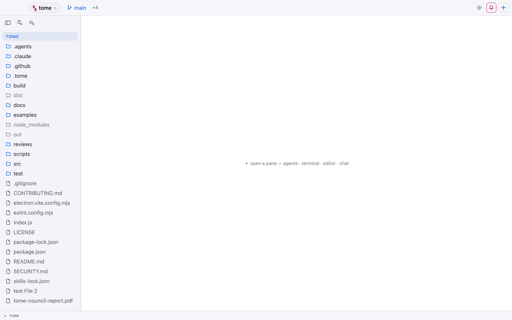
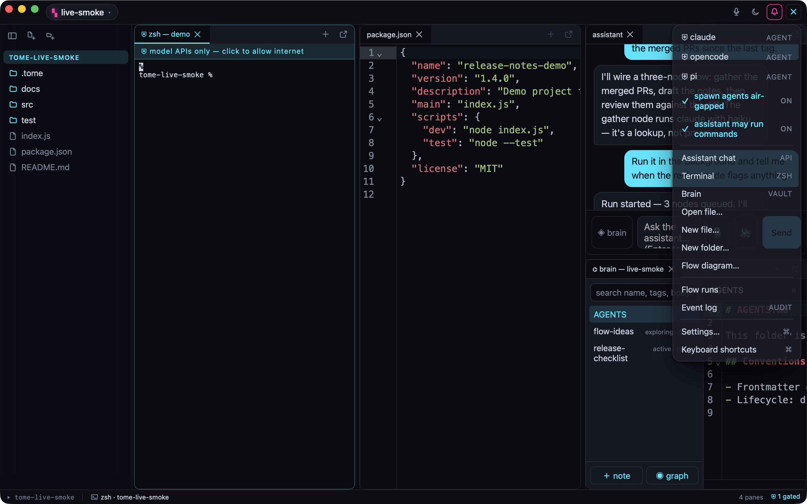
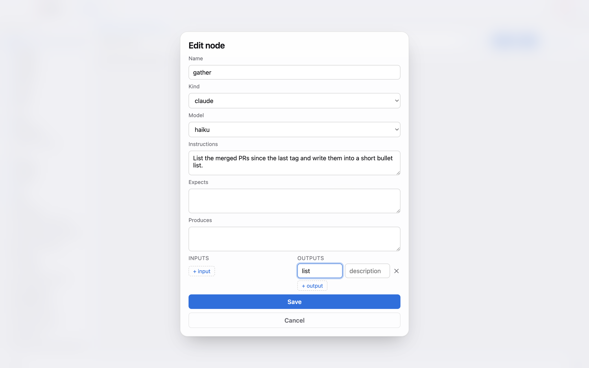
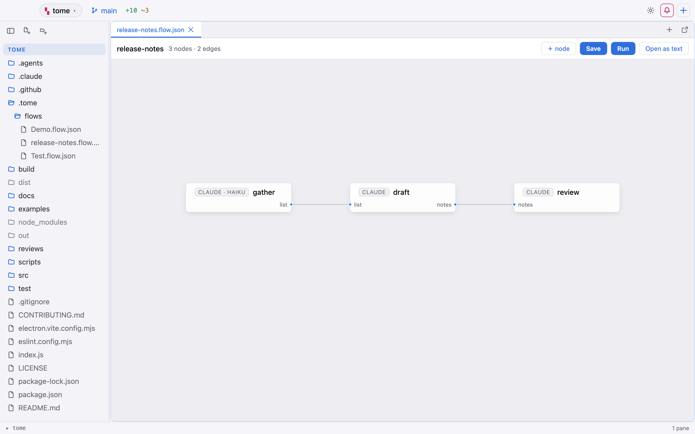

01workspace
Open a workspace
Click the ▚ chip in the top bar, type a name into "new workspace name…", then "Add folder to workspace…" and pick the repo you're shipping from. Click a folder head in the tree to make it the active root — new panes, the git chip and every create action follow it. Fill the grid from the ＋ menu: a terminal, the file you're about to change, an agent, dragged into whatever arrangement suits the work.

Why it is built this way
Workspaces and the pane grid
A workspace is a named group of project folders, not a project format — nothing is written into your repo to open one. Panes are what actually cost: one PTY, owned by the Rust backend, and one xterm instance each, inside a single webview — spawning a pane adds a process, not a browser, and a six-pane workspace has exactly as many webviews as a one-pane workspace: one. Switching workspaces tears the panes down; an idle workspace costs its files on disk, not resident processes. The ＋ in a pane header opens the new pane as a tab in that group, so an agent and the helpers it needs stay stacked instead of carving up the grid.
ps -A -o rss,comm | grep -i "tome" | awk '{s+=$1} END {print s/1024 " MB"}'02contain
Contain the network
Agent panes spawn contained by default — the ＋ menu prefixes every agent with ⛨ to say so, and the pane wears a cyan strip reading "⛨ model APIs only — click to allow internet". Commit the hosts your team actually needs to .tome/egress.json; the first time the workspace opens that file, Tome lists exactly those hosts and waits for you to click "Allow N hosts". When a pane genuinely needs the open internet, click its strip and give the second factor — the authenticator code, or the passphrase — for 15, 30 or 60 minutes.
Why it is built this way
The containment, and the allowlist as committed data
The sandbox kills all direct egress, DNS included; the only route out is a per-pane CONNECT proxy on 127.0.0.1 that allows model-provider domains. Freeing a pane widens that proxy and never the sandbox — the seatbelt profile is fixed at spawn and no code path weakens it afterwards, so raw sockets and ssh stay dead even in a freed pane, and tools that ignore proxy env vars fail closed. Consent to a repo's list is per-user and pinned to the file's SHA-1, verified in the main process, so editing one character re-prompts everyone: "that re-prompt is a feature, not friction — the user sees the change". Honest caveat: Claude Code's WebSearch/WebFetch run server-side at api.anthropic.com, so a contained claude can still search, while opencode's and pi's client-side fetches are genuinely blocked until freed.
(version 1)
(allow default)
(deny network-outbound)
(allow network-outbound (remote ip "localhost:*"))
(deny file-write* (subpath "<userData>"))
(deny file-read* (literal "<userData>/egress-auth.json"))03create
Grow the tree
Click the new-file button in the tree header, or ＋ → New file…, and type a path relative to the active root — src/review/verdict.js. Tome creates the parent folders first, then the file itself with an exclusive write, and opens it in an editor pane. A name that can't work comes back as a sentence — "path may not contain '..'" — rather than a raw ENOENT, and an existing file toasts "already exists" instead of being clobbered.

Why it is built this way
File and folder creation
The validation is UX, not a security boundary, and its own comment says so: fs:mkdir and fs:createFile are user-driven by design and take the path they are handed, so catching '..' at the prompt only keeps you from getting a confusing error instead of a useful toast. The exclusive 'wx' flag is what makes "already exists" honest — creation never silently overwrites. Parent directories are made first for the same reason: without them, 'wx' would report a collision that never happened.
if (trimmed.startsWith('/')) return { ok: false, reason: 'path cannot be absolute' }
if (trimmed.includes('\\')) {
return { ok: false, reason: 'backslashes are not allowed — use "/" to separate folders' }
}
for (const seg of segments) {
if (seg === '..') return { ok: false, reason: 'path may not contain ".."' }
if (seg === '' || seg === '.') return { ok: false, reason: `"${trimmed}" is not a valid path` }
}04editor
Edit with diagnostics
Type in the editor: CodeMirror picks the language from the extension, and the first file of that language starts the matching server for that workspace root. Errors and warnings land in the gutter, hover shows types, and F12 jumps to a definition — opening another file at the right line if that is where it lives. ⌘S saves; the tab keeps a dot until you do.
Why it is built this way
Editor and language servers
One server process per workspace root and language, spawned lazily on first open and reused for every file after. Document sync is full-text rather than incremental on purpose: "full sync costs a string per keystroke-batch and removes a whole class of desync bugs" — incremental is the optimisation to reach for only if a large file measurably drags. Servers are never bundled, so if typescript-language-server or gopls isn't on your PATH that language simply has no diagnostics, and you are told once rather than nagged on every keystroke.
tome.lsp.onMissing(({ cmd, langId }) =>
toast(`no ${langId} language server — install ${cmd} for diagnostics`, 'ok')
)05flow
Draw the flow
＋ → Flow diagram…, name it review-pipeline: Tome writes .tome/flows/review-pipeline.flow.json and opens it as a canvas rather than as text. Add nodes with "＋ node", drag them where you want them, and drag from an output dot to an input dot to wire an edge; click a card to edit Name, Kind, Instructions, Expects, Produces and its ports. Save writes formatted JSON, and "Open as text" puts the same file in an editor tab beside the canvas.
Why it is built this way
Flows
Edges wire ports, not nodes — { from, to, fromOutput, toInput } — because those port names are what the composed prompt uses to tell a downstream agent what shape of thing is arriving and what it owes back. Errors and warnings are a hard line, not a style choice: a broken graph (a duplicate id, an edge to a node that isn't there) refuses to run, while a wrong declared contract (a port name that doesn't exist, a kind this build hasn't heard of) only warns, so a hand-edited file still opens and renders. The flow's name becomes a real folder under .tome/flows/, so a "/", "\" or ".." in it is a load-time error, re-checked by the canvas before either kind of Run and a third time by the runner in main, "right at the point of danger instead of only trusting an upstream gate". The canvas is hand-rolled SVG and DOM: the app's CSP is script-src 'self', so there is no diagram library to load.
{
"id": "n3",
"kind": "pi",
"name": "adversarial-reviewer",
"instructions": "Read the plan AND the implementer's changelog. Review the diff adversarially: try to break each new interface, check every item on the plan's threat list, and hunt for the bug the implementer hoped you wouldn't find.\nVerdict format: SHIP or FIX, each finding with file:line and a one-line reproduction. No style nitpicks.",
"expects": "planner's plan and implementer's code+changelog",
"produces": "a SHIP/FIX verdict with findings",
"inputs": [{ "name": "plan" }, { "name": "code" }],
"outputs": [{ "name": "verdict" }],
"x": 940,
"y": 160
}06models
Pin cheaper models
Open the triage node and set Model to haiku — its card now reads claude · haiku, while every other node stays (default), meaning whatever the CLI would have chosen. The select only appears for kinds that have an allowlist: claude offers sonnet, opus, haiku and fable today, while opencode and pi resolve models from their own dynamic catalogs, so their field stays hidden rather than sitting there empty.

Why it is built this way
Per-node model pinning
The list is fixed in src/shared/agent-models.js because this is a security boundary and not a convenience: main builds the pty command line itself, compares the incoming value against that list, and "passes its OWN copy through, never the string it was handed". What it builds goes to zsh -l -c, which is why a bare [a-z0-9-] character guard sits behind the allowlist — "the single place in this app where untrusted-adjacent input and a literal get concatenated into something a shell will interpret". A pin this build no longer lists is dropped with a warning and the node spawns on the CLI default: "Dropped, not refused" — an older flow should still run rather than fail to spawn. Absent is the schema's spelling of "default", so the editor deletes the key instead of writing "", and every existing .flow.json stays valid with no version bump and no migration.
/bin/zsh -l -c 'claude --model haiku'
/usr/bin/sandbox-exec -p "$(seatbelt_profile)" /bin/zsh -l -c 'claude --model haiku'07run
Run the flow
Press Run on release-notes. The canvas saves itself if you have unsaved edits — the runner reads the file, not the screen — and then the graph runs in the background: sorted into layers, two nodes at a time, one headless claude -p per node, each rooted at the folder that holds .tome so the handoff paths resolve. No panes open. ＋ → Flow runs draws what is happening as a pipeline, layers left to right, and clicking a node tails its log; the status bar counts what is still going. Run's ▾ keeps the original path — Run in terminals, one pane per node with the brief typed at the prompt for you to read and submit — and some flows still need it: review-pipeline's verify node is a plain terminal, and a kind with no headless template makes Run refuse the whole flow by name rather than execute half of it.
Why it is built this way
Flow Run — the one thing a flow submits
This is the one place in Tome where something is submitted for you, and it is deliberately the narrowest shape that still runs a pipeline: a flow submits only the composed brief, only on an explicit Run click, only headless — claude -p, a process that answers and exits, leaving no interactive session for anything to be typed into — and inside the same containment a freshly spawned agent pane would get, with every transition in the event log, because "an agent nobody is watching has to be MORE auditable than one in a visible pane, not less". That last clause is deliberately not "always contained": a background node reads the same ＋ menu default a new pane does, so turning "spawn agents contained" off puts the run on the open internet exactly as it would a pane. The difference is that a pane says so — it wears the strip — and a background node has nothing to wear it on, which is why the run's network state rides on its row in the Flow runs page as ⛨ or ⛉ open internet, and why those proxies are the one thing the status bar's pane counter deliberately ignores. The brief rides as a single argv element to the process spawn, never through a shell, which is exactly why it needs no character guard while a pinned model still does: the model goes into a command line zsh -l -c will parse, the brief does not. Sequencing is real here in a way the pane mode never was — a node starts only once every upstream exited 0, two at a time across the whole run — and a node whose upstream failed is skipped rather than started on a handoff file that was never written. What Run in terminals kept is the older promise, unchanged: the prompt is flattened to one line and then control-stripped, in that order, because it embeds hand-editable flow.json fields verbatim and "a bare embedded LF submits a shell line on its own" — flattening first because the strip is blunt and "stripping alone would glue words together at every line join". Handoff stays one markdown file per output rather than any new IPC, so the same n1-plan.md lands whichever way you ran it.
You are "implementer" in a Tome flow "review-pipeline".
Instructions: Read the plan from the handoff file. Implement it slice by slice, running the test suite after each slice and keeping the build green.
Do not deviate from the plan's interfaces without writing down why — the reviewer will check the diff against the plan, not against your intentions.
You receive:
planner's plan: file-level slices, interfaces, threat list
- "plan" from planner (read from .tome/flows/review-pipeline/n1-plan.md)
You must produce:
the diff, plus a changelog of any deviations from the plan
- code
Hand off "code" by writing it to .tome/flows/review-pipeline/n2-code.md, then tell the user when you're done.out/ — copied and hashed products, a manifest, and a runs index. A node that exits 0 without writing its declared outputs still fails the run..tome/flows/review-pipeline/out/
├── m2f1k9/
│ ├── n5-brief.md # triage → planner
│ ├── n1-plan.md # planner → implementer
│ ├── n2-code.md # implementer → reviewer
│ ├── n3-verdict.md # reviewer → verify
│ └── manifest.json # flow sha256, run id, containment, git head, product sha256s
├── latest/ # a fresh copy of the newest settled run
└── runs-index.json # every run, newest firsttome-runner run review-pipeline.flow.json # run once, headless
tome-runner schedule install review-pipeline.flow.json \
--on-calendar "*-*-* 03:00:00" # systemd --user timer08conductor
Ask the conductor
Open an Assistant chat and ask what the reviewer found. It can list the panes, read a pane's scrollback with ANSI stripped, open panes and files, and type into a terminal — so "open the verdict file" lands as a tab beside the chat that asked for it. With "assistant may run commands" off, which is the default, anything it types waits at the prompt for you.
Why it is built this way
The conductor
Scrollback is attacker-influenceable — any program can print text that looks like an instruction — so the loop is treated as a classic confused deputy: with auto-run off, control characters that would submit or signal are stripped from typed text, so text: "ls\r" cannot run a command you never approved. The loop is bounded to eight tool turns and a cumulative token budget, and the scrollback it reads is capped at 200,000 characters per pty, so a chatty agent can't grow memory without bound. Its file-opening tool is confined to the open workspace folders and brain vaults, and refuses anything outside them. The chat API key never enters the renderer: the client lives in main and the renderer receives streamed deltas over IPC.
type_in_terminal — "Type text into a terminal or agent pane. Set press_enter to also
submit it — that only takes effect when the user has enabled "assistant may run
commands"; otherwise the text is left in the prompt for the user to review and
submit."09audit
Read the log
＋ → Event log. Newest first and live: every conductor tool call with its identifying hint and whether it failed, every pane unlock and relock with the pane and the minutes granted, and every blocked host with a count of attempts. It is a read-only tail — refresh is the only control on it.
Why it is built this way
Security event log
The log records actions, never payloads: tool inputs and outputs and typed text stay out by design, because they may contain secrets. That is also its honest limit — it will tell you that pty-4 was refused github.com three times and that you opened that pane's internet for fifteen minutes; it will not tell you what anyone typed. It keeps at most 5,000 records on disk, and the renderer reaches it only through the lock-gated events:list channel. The file lives in userData, which the seatbelt profile denies contained agents any write to — the log is not something the panes it describes can edit.
{"ts":"2026-08-08T14:02:11.913Z","kind":"egress:blocked","paneId":"pty-4","host":"github.com","count":3}
{"ts":"2026-08-08T14:03:40.204Z","kind":"egress:unlock","paneId":"pty-4","minutes":15}
{"ts":"2026-08-08T14:07:02.551Z","kind":"conductor:tool","tool":"open_file","chatId":"chat-1","ok":true,"hint":"/repo/.tome/flows/review-pipeline/n3-verdict.md"}10ship
Ship it
Watch the branch chip while the implementer works: +added ~modified −deleted across the working tree, ↑↓ against upstream, and click it to switch branches or create one. The git menu's History opens a commit log with ref chips, the message, the changed files and a per-file diff. Commit from a terminal pane or ask the agent that wrote the code — Tome shows you the tree, it doesn't commit for you.

Why it is built this way
Git, and .tome as the project's memory
What the run leaves behind is the point. The pipeline is a diffable .flow.json, the policy is a .tome/egress.json your teammates consent to once, and the agents' handoffs are plain markdown the agents wrote themselves — so the whole run reviews like any other change instead of living in someone's terminal scrollback. The products and manifest land under out/, gitignored and hashed, and a finished run can be exported to a destination you've consented to once. The event log stays outside the repo in userData, because it is per-user evidence rather than project content. Nothing here needs a hosted service: the CLIs are the ones already on your PATH, and every file above is one you can open, edit and revert. For unattended runs, remote-runner.md covers the headless tome-runner and systemd --user timers.
.tome/
├── egress.json # hosts this repo asks to reach — consented, hash-pinned
└── flows/
├── review-pipeline.flow.json # the pipeline itself, hand-editable
├── review-pipeline/
│ ├── n5-brief.md # triage → planner
│ ├── n1-plan.md # planner → implementer, reviewer
│ ├── n2-code.md # implementer → reviewer
│ └── n3-verdict.md # reviewer → verify
└── out/ # products + manifest.json, gitignored